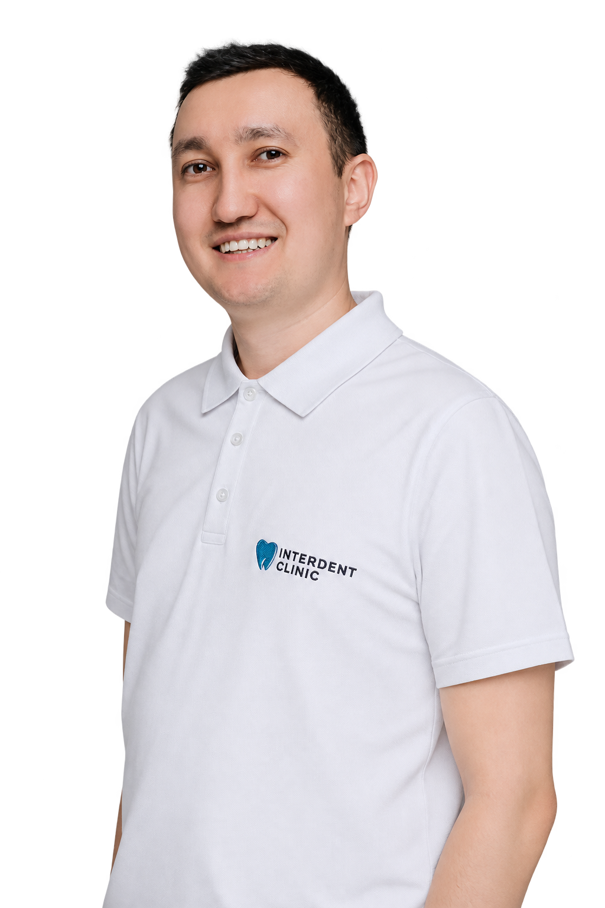
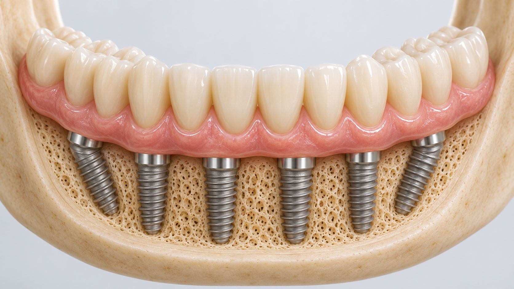
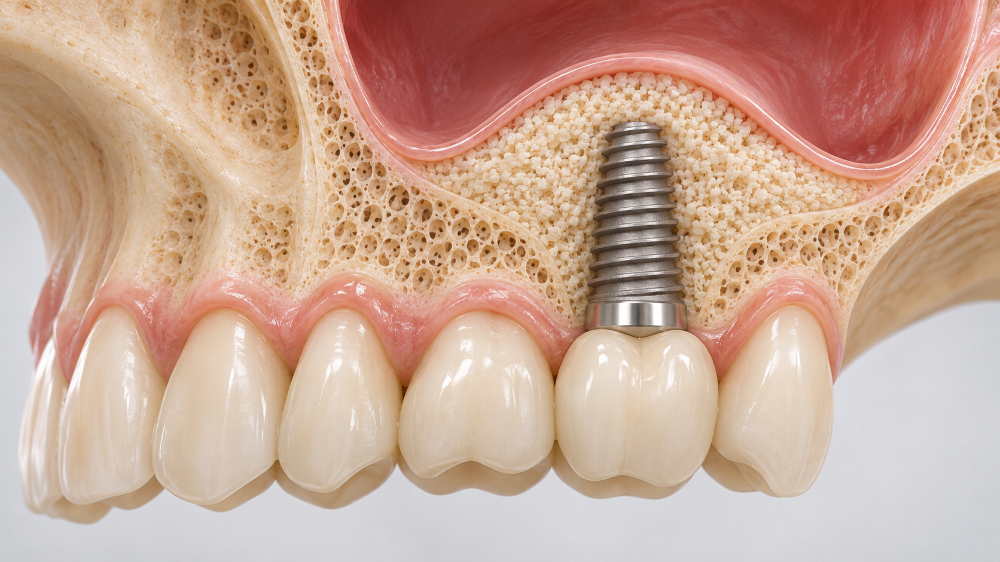
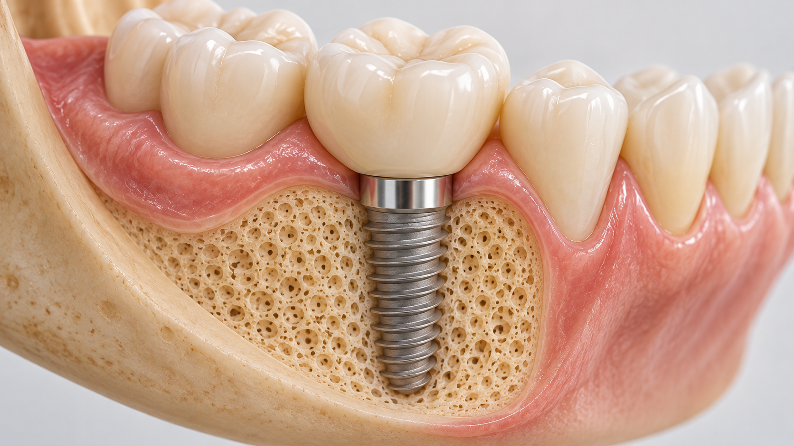
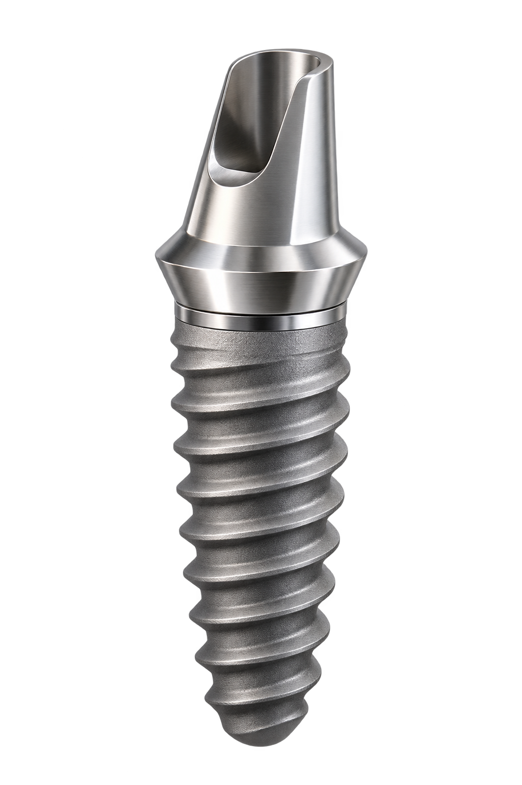
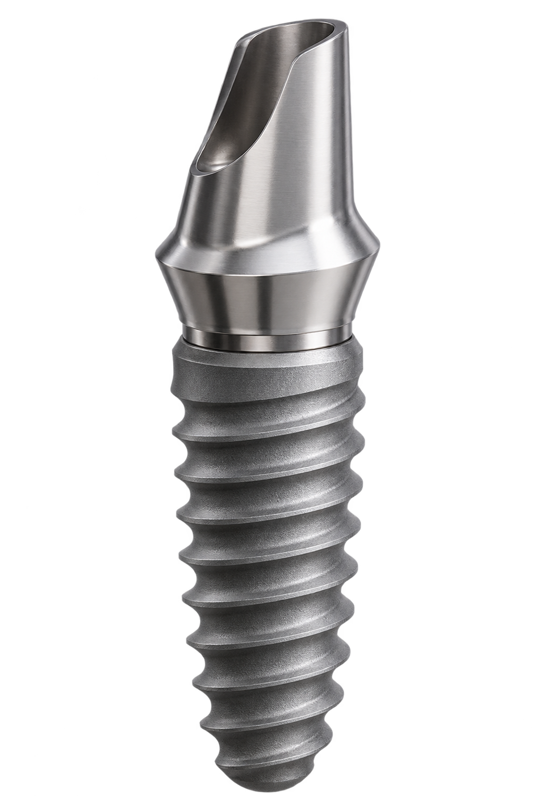
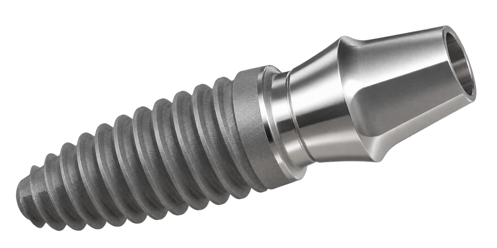
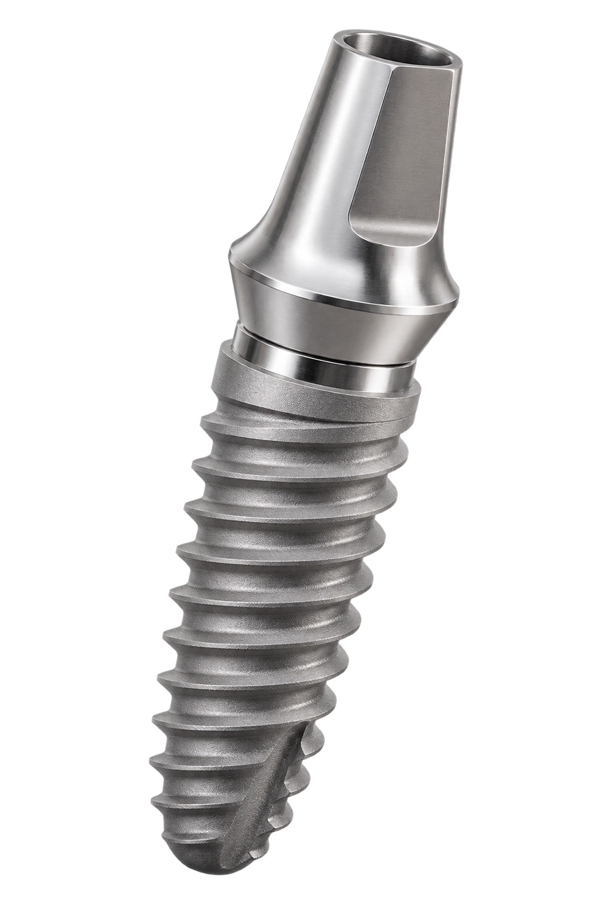
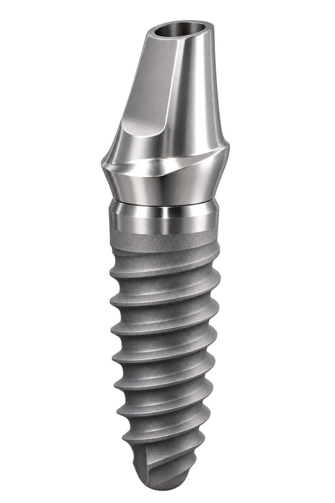
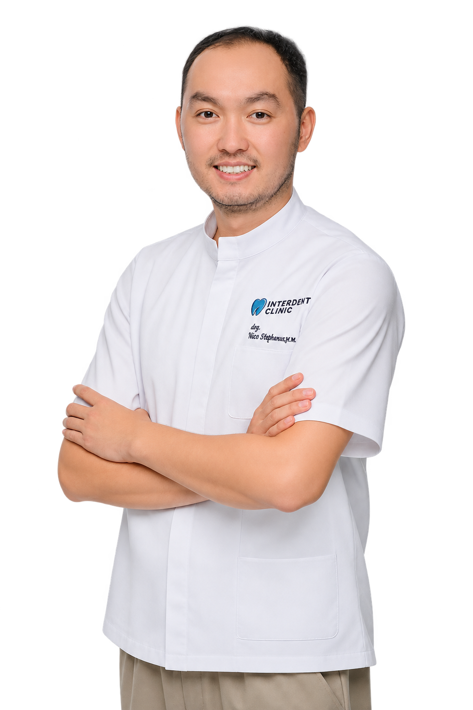

Точная диагностика
3D-диагностика помогает врачу оценить состояние кости и спланировать установку импланта.

[ ИМПЛАНТАЦИЯ ЗУБОВ В АСТАНЕ ]
Восстановите утраченный зуб: импланты Straumann, Neodent, Dentium, Izen и DIO. 3D-диагностика, официальная гарантия, рассрочка Kaspi 0-0-24
Установка импланта — от 165 000 тг.Цена за установку импланта. Итоговую стоимость рассчитывает имплантолог на консультации.
3D-диагностика помогает врачу оценить состояние кости и спланировать установку импланта.
Заключаем договор. Гарантию на имплант обеспечивает производитель.
Работаем с имплантами Straumann, Neodent, Dentium, Izen и DIO. Врач подберёт подходящий вариант после осмотра.
Рассрочка Kaspi 0-0-24 на имплантацию.
ВИДЫ ИМПЛАНТАЦИИ
 Установка импланта
Установка имплантаВосстановление одного утраченного зуба.

All-on-4 / All-on-6Восстановление всех зубов на 4 или 6 имплантах.

Синус-лифтингЕсли на верхней челюсти не хватает кости для импланта.

Наращивание костной тканиЕсли для установки импланта не хватает костной ткани.
СТОИМОСТЬ УСТАНОВКИ
Цена указана за установку импланта. Протезная часть — абатмент и коронка — считается отдельно.

IzenЮжная Корея165 000 тг.
DIOЮжная Корея165 000 тг.
DentiumЮжная Корея206 250 тг.
NeodentШвейцария250 000 тг.
StraumannШвейцария500 000 тг.ПУТЬ ПАЦИЕНТА
Осмотр, 3D-диагностика, консультация имплантолога.
Врач подбирает подходящий вариант лечения и систему импланта, рассчитывает стоимость.
Заключаем договор с гарантией. Возможна рассрочка Kaspi 0-0-24.
Хирургический этап.
После приживления импланта ортопед устанавливает коронку.
Сроки каждого этапа врач определяет индивидуально после диагностики.
КОМАНДА КЛИНИКИ

Врач-стоматолог, хирург
Опыт: с 2015 года

Врач-стоматолог-ортопед
Опыт: более 10 лет
Заключаем договор. Гарантию на имплант обеспечивает производитель.
Оплатите имплантацию в рассрочку через Kaspi 0-0-24.
При оплате наличными действует дополнительная скидка. Размер скидки и итоговую стоимость рассчитывает имплантолог на консультации.
ОПЫТ ПАЦИЕНТОВ
Врач проведёт осмотр, подберёт вариант лечения и рассчитает стоимость
Записаться на консультацию ↗
ЖДЁМ ВАС


Опыт: с 2015 года
Опыт: более 10 лет